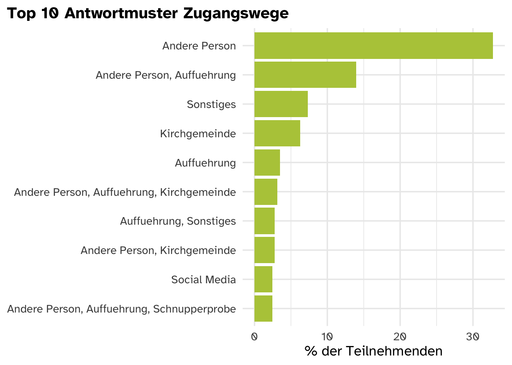

Thüringen
Datenquelle
Relevante Fragen:
- Frage “In welcher Region liegt deine Ortsgruppe?” im Ortsgruppen Fragebogen
- Frage “Wie heißt deine Ortsgruppe?” im Ortsgruppen Fragebogen
- Frage “Wie heißt deine Ortsgruppe?” im Teilnehmer*innen Fragebogen
Ortsgruppen, die von Teilnehmenden genannt werden, bekommen das Label “TN” in der Spalte Datenquelle. Ortsgruppen, für die der Ortsgruppen-Fragebogen ausgefüllt wurde, bekommen das Label “OG” in der Spalte Datenquelle. Beachte: Manche Ortsgruppen kommen nur im TN-Fragebogen vor, da die Ortsgruppenleitung den OG-Fragebogen nicht beantwortet hat
Tip
Mit einem Klick auf den :arrow_forward: kannst du jede Ortsgruppe öffnen und ein genaueres Profil sehen.
Anzahl Ortsgruppen
- 6 Anzahl von Antworten auf den Ortsgruppen Fragebogen
- 6 Anzahl verschiedener Werte bei den Antworten zur Frage “Wie heißt deine Ortsgruppe?” im Teilnehmer*innen Fragebogen
Anzahl Aktive
| Fragebogen | Teilnehmer*innen | Mitarbeitende | Insgesamt |
|---|---|---|---|
| Teilnehmer*innen Fragebogen | 501 | nicht abgefragt | nicht errechenbar |
| Ortsgruppen Fragebogen | 68 | 34 | 102 |
Es gibt zwischen 6 und 6 Ortsgruppen.
Insgesamt sind in den Ortsgruppen von TEN SING 102 Personen aktiv.
Davon sind zwischen 50 und 68 als Teilnehmer*innen engagiert. 34 Personen arbeiten für TEN SING oder engagieren sich in der Leitung einer Ortsgruppe.
Angebote in den Ortsgruppen
Unterstützungsbedarfe
Datenquelle
Frage: “Bei welchen Themen würdet ihr gern Unterstützung oder Begleitung nutzen?” im Ortsgruppen Fragebogen
Spalten im Roh-Datensatz:
[1] "F11_Unterstuetzungsbedarfe/deutschlandweite_Seminare_Workshops"
[2] "F11_Unterstuetzungsbedarfe/Oeffentlichkeitsarbeit_Social_Media"
[3] "F11_Unterstuetzungsbedarfe/Einheitliche_CloudSpeicher_Plattform"
[4] "F11_Unterstuetzungsbedarfe/Schulung_von_Teamern_Ehrenamtlichen"
[5] "F11_Unterstuetzungsbedarfe/Austausch_Chorsaetze"
[6] "F11_Unterstuetzungsbedarfe/Standpunkte_Hilfestellungen_Themen"
[7] "F11_Unterstuetzungsbedarfe/Gewinnung_von_neuen_Teilnehmenden"
[8] "F11_Unterstuetzungsbedarfe/Internationale_Zusammenarbeit" debug - wird noch gelöscht
# A tibble: 8 × 7
bedarf median_bedarf bedarf_mean sd range sd_label bedarf_label
<chr> <int> <dbl> <dbl> <int> <fct> <fct>
1 Angebot von deut… 2 2.2 0.447 1 konstant hoch
2 Austausch von Cho… 3 2.4 1.34 3 variier… hoch
3 Einheitliche Komm… 2 1.6 0.894 2 variier… mittel
4 Gewinnung von neu… 3 2.6 0.894 2 variier… hoch
5 Internationale Zu… 2 1.8 1.30 3 variier… mittel
6 Schulung von Team… 2 1.6 1.14 3 variier… mittel
7 Standpunkte bzw. … 1 1.4 0.894 2 variier… mittel
8 Öffentlichkeitsar… 2 1.4 1.34 3 variier… mittel Weitere Unterstützungsbedarfe (2 offene Antworten):
- Eigentlich brauchen wir vor allem Chorsätze. Und bei uns ist die Gewinnung von Mitarbeitenden ein Thema. Die vorhandenen Mitarbeitenden sind überlastet und innerhalb der Gruppe fehlt in manchen Bereichen geeigneter/williger Nachwuchs.
- Materialien-Cloud (nicht für Chorsätze, sondern Wissensaustausch); Chorleiter-WS Tage
Wie sind die Teilnehmenden zu TEN SING Thüringen gekommen?
Datenquelle
Frage: “Wie bist du zu TEN SING gekommen?” im Teilnehmer*innen Fragebogen
Interpretationshilfe
- y-Achse/senkrechte Achse: Antwortoptionen, die ausgewählt werden konnten.
- x-Achse/waagerechte Achse: Prozentzahl der Teilnehmer*innen, die diese Option als eine ihrer Antworten ausgewählt haben.
Es handelt sich um eine Multiple-Choice Frage, das heißt, Teilnehmende konnten mehrere Optionen auswählen. Das ist der Grund, wieso sich die Prozentzahlen nicht auf 100%, sondern auf 160% summieren.
Beispielinterpretation: 66% der Teilnehmenden gaben als einen ihrer Zugangswege zu TEN SING an, von einer anderen Person mitgenommen worden zu sein.

Interpretationshilfe
- y-Achse/senkrechte Achse: top 10 Kombinationen von Antwortoptionen, die zusammen ausgewählt wurden.
- x-Achse/waagerechte Achse: Prozentzahl der Teilnehmer*innen, die diese Optionen zusammen ausgewählt haben.
Beispielinterpretation: 13.94% der Teilnehmenden gaben an, dass diese 2 Zugangswege eine Rolle gespielt haben, wie sie zu TEN SING gekommen sind: Andere Person, Auffuehrung
Sonstige Zugangswege
Antworten aus dem offenen Textfeld werden noch zusammengefasst werden.
Maßnahmen
Datenquelle
Frage: “Welche Maßnahmen setzt ihr vor Ort ein, um neue Teilnehmende zu finden?” im Ortsgruppen Fragebogen
Welche Angebote werden von Ortsgruppen angeboten?
An welchen Angeboten nehmen TN teil?
Steckbriefe Ortsgruppen
Footnotes
Anzahl der Antworten auf den Teilnehmer*innen Fragebogen↩︎